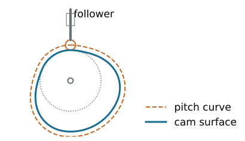
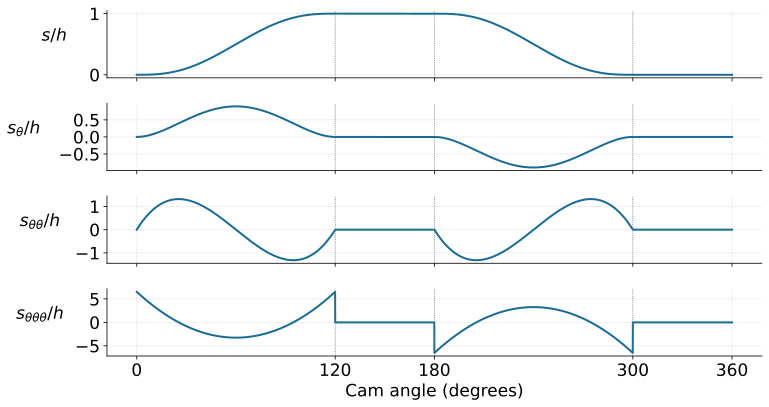

Cams
Kinematics and Machine Dynamics · Chapter 13
Chapter overview
- Specify follower motion over a complete cam revolution.
- Construct displacement, velocity, acceleration, and jerk diagrams.
- Derive polynomial motion laws for dwell transitions.
- Size a radial cam using pressure angle and curvature.
A cam prescribes a motion

The cam profile imposes a follower displacement s(\theta) through contact. Geometry prescribes motion only while contact and the assumed constraints are maintained.
Cam and follower terminology
| Classification | Examples |
|---|---|
| Follower motion | Translation; oscillation |
| Cam geometry | Radial disk; cylindrical; spatial |
| Contact shape | Roller; flat-faced; curved sliding follower |
| Closure | Force-closed; form-closed |
A force-closed follower uses a spring, gravity, or another applied force to maintain contact. A groove or conjugate pair can provide form closure.
What must the motion accomplish?
Critical extreme position (CEP): the follower must reach specified endpoints; the path between them can be designed.
Critical path motion (CPM): the displacement history itself must follow a prescribed function.
Common programs are rise-fall (RF), rise-fall-dwell (RFD), and rise-dwell-fall-dwell (RDFD).
A dwell is an interval of constant follower displacement.
Start with a timing diagram
Example double-dwell program, one revolution per machine cycle:
| Cam angle | Event | Displacement |
|---|---|---|
| 0–120^\circ | Rise | 0\to h |
| 120–180^\circ | High dwell | h |
| 180–300^\circ | Return | h\to0 |
| 300–360^\circ | Low dwell | 0 |
The intervals must add to 360^\circ, and the end of the cycle must join its beginning smoothly.
S–V–A–J: angle versus time
Let primes denote derivatives with respect to cam angle in radians.
For constant angular speed \omega:
v=\omega s',\qquad a=\omega^2s'',\qquad j=\omega^3s'''.
A plot of s'(\theta) is not yet a physical velocity plot. The speed scale matters: doubling rpm multiplies acceleration by four and jerk by eight.
If the cam speed varies
The chain rule gives
v=s'\omega, a=s''\omega^2+s'\alpha, j=s'''\omega^3+3s''\omega\alpha+s'\dot\alpha.
Here \alpha=\dot\omega. The constant-speed formulas are a special case, not a general identity.
Continuity at every join
For a cam intended to run beyond very low speeds, use continuous displacement, velocity, and acceleration over the complete cycle.
An acceleration jump creates an impulsive jerk in the ideal model and excites vibration in the real mechanism.
A finite jump in jerk can be acceptable in this kinematic criterion; continuous jerk imposes a stronger smoothness requirement.
These conditions must hold at the 360^\circ/0^\circ join as well.
Why a straight ramp is insufficient
A linear rise joined to a dwell has an abrupt velocity change, hence impulsive acceleration.
Simple harmonic rise has zero endpoint velocity, but its nonzero endpoint acceleration does not match a dwell.
The motion law must be chosen for its boundary conditions, not just for a visually smooth displacement plot.
Normalize the rise interval
For a rise beginning at \theta_0 and spanning \beta radians:
u=\frac{\theta-\theta_0}{\beta},\qquad0\leq u\leq1, s=h f(u).
At constant cam speed:
v=\frac{h\omega}{\beta}f',\quad a=\frac{h\omega^2}{\beta^2}f'',\quad j=\frac{h\omega^3}{\beta^3}f'''.
Derivatives of f are with respect to u.
Double-dwell boundary conditions
A rise connecting two dwells must satisfy
f(0)=0,\quad f(1)=1, f'(0)=f'(1)=0, f''(0)=f''(1)=0.
Six independent conditions determine six coefficients of a polynomial of degree at most five.
Derive the 3–4–5 polynomial
Let f(u)=c_0+c_1u+\cdots+c_5u^5.
The conditions at zero give c_0=c_1=c_2=0.
At u=1:
\begin{bmatrix}1&1&1\\3&4&5\\6&12&20\end{bmatrix} \begin{bmatrix}c_3\\c_4\\c_5\end{bmatrix} =\begin{bmatrix}1\\0\\0\end{bmatrix}.
Thus \boxed{f(u)=10u^3-15u^4+6u^5}.
Differentiate the motion law
f'=30u^2-60u^3+30u^4, f''=60u-180u^2+120u^3, f'''=60-360u+360u^2.
Displacement, velocity, and acceleration match both dwells.
Endpoint jerk is finite but nonzero: f'''(0)=f'''(1)=60. It jumps to zero on the dwells.
The complete double-dwell program

Rise and return use the 3–4–5 polynomial; derivatives are with respect to angle. Jerk has finite jumps at the dwell boundaries.
Worked example: rise duration and velocity
Use h=20 mm, \beta=120^\circ=2\pi/3 rad, and 300 rpm.
\omega=10\pi\ \mathrm{rad/s},\qquad T_r=\frac{\beta}{\omega}=\frac1{15}\ \mathrm{s}.
The normalized peak speed is \max f'=15/8 at u=1/2:
\boxed{v_{\max}=\frac{0.020}{1/15}\frac{15}{8} =0.5625\ \mathrm{m/s}.}
Worked example: acceleration and jerk
For the 3–4–5 polynomial:
\max|f''|=\frac{10\sqrt3}{3},\qquad \max|f'''|=60.
With h=0.020 m and T_r=1/15 s:
\boxed{|a|_{\max}=\frac{h}{T_r^2}\frac{10\sqrt3}{3} =25.98\ \mathrm{m/s^2},} \boxed{|j|_{\max}=\frac{60h}{T_r^3}=4050\ \mathrm{m/s^3}.}
The acceleration peaks occur at u=(3\mp\sqrt3)/6.
Return and dwell segments
For a return over \beta_f radians beginning at \theta_f, let u_f=(\theta-\theta_f)/\beta_f.
s=h[1-f(u_f)].
The displacement decreases; its derivatives acquire a minus sign and the appropriate powers of 1/\beta_f.
On the high dwell, s=h; on the low dwell, s=0. All time derivatives vanish during either dwell.
Continuous-jerk alternative: 4–5–6–7
Add the conditions f'''(0)=f'''(1)=0 to the six dwell conditions.
The resulting seventh-degree polynomial is
\boxed{f(u)=35u^4-84u^5+70u^6-20u^7.}
Its jerk matches the dwells continuously. This improves boundary smoothness but does not automatically minimize peak velocity, acceleration, or cam size.
Another option: cycloidal rise
f(u)=u-\frac{\sin(2\pi u)}{2\pi}, f'=1-\cos(2\pi u),\quad f''=2\pi\sin(2\pi u).
Displacement, velocity, and acceleration satisfy the double-dwell boundary conditions. Jerk remains finite but jumps at the dwell joins.
Compare candidate laws using peak derivatives, pressure angle, curvature, and the actual load requirements.
Single-dwell programs
For rise-fall-dwell motion, the follower reverses at the top without spending an interval there.
At the rise/fall join, enforce the same displacement, zero velocity at a smooth maximum, and matching acceleration.
The common acceleration need not be zero. Separate polynomial segments can meet prescribed join conditions.
Independent boundary conditions must determine a nonsingular coefficient system.
A worked single-dwell construction
For one complete rise and fall over 0\leq u\leq1, use
\boxed{\frac{s}{h}=64u^3(1-u)^3.}
The displacement is zero at both ends and equals h at u=1/2.
Endpoint velocity and acceleration are zero, so it joins a low dwell. At the top, s_u=0 and s_{uu}=-24h: a smooth reversal with nonzero downward acceleration.
Base circle, prime circle, and pitch curve
The base circle is the largest circle centered on the cam axis that fits inside and is tangent to the cam surface.
For a roller follower, the pitch curve is the roller-center locus in the cam-fixed frame.
The prime circle is the smallest centered radius attained by that pitch curve.
For an in-line radial roller follower at its low dwell, R_p=R_b+r_r, where r_r is roller radius.
From motion law to pitch curve
For an in-line translating roller follower, define r(\theta)=R_p+s(\theta).
One cam-fixed coordinate convention gives
x_p=r\sin\theta,\qquad y_p=r\cos\theta.
Generate the physical cam profile by offsetting the pitch curve inward along its normal by the roller radius.
Simply subtracting the roller radius radially gives the correct result on a circular dwell, but generally not on a rise or return.
Pressure angle sizes the cam
For this in-line translating roller geometry:
\boxed{\tan\phi=\frac{s'}{R_p+s}.}
A larger R_p reduces the pressure angle for the same motion law. A shorter rise interval increases |s'| and tends to increase pressure angle.
Given an allowed angle \phi_{\max}, check the entire cycle:
R_p\geq\max_\theta\left(\frac{|s'|}{\tan\phi_{\max}}-s\right).
Worked example: a conservative size bound
For the 20 mm, 120^\circ 3–4–5 rise,
\max|s'|=\frac{h}{\beta}\frac{15}{8}=17.90\ \mathrm{mm/rad}.
Choose \phi_{\max}=30^\circ as a design assumption.
Because s\geq0, the sufficient bound
R_p\geq\frac{17.90}{\tan30^\circ}=31.02\ \mathrm{mm}
is conservative. Select R_p=35 mm, then check curvature before accepting the design.
Curvature of the pitch curve
For a polar pitch curve r=R_p+s, the signed curvature radius is
\boxed{\rho_p= \frac{(r^2+r'^2)^{3/2}}{r^2+2r'^2-rr''}.}
At convex regions, require \rho_p>r_r for a regular inward roller offset. Equality produces a cusp; too large a roller can undercut the intended profile.
Inflections and concave regions require their own signed-curvature and interference checks.
Worked example: roller and curvature
Use the complete double-dwell program, R_p=35 mm, and r_r=5 mm.
Sampling the smooth segments gives approximately:
- peak pressure-angle magnitude 22.1^\circ;
- minimum positive pitch-curve radius 35.0 mm;
- base-circle radius R_b=30 mm.
The sampled convex curvature exceeds the roller radius. Refine extrema and check the full manufactured profile before final design.
Contact forces and manufacturing
A spring-loaded follower needs sufficient preload to maintain compressive contact throughout the motion, accounting for follower inertia and external loads.
A form-closed arrangement avoids separation in the ideal geometry but can experience impact across clearance.
Check material stresses, roller bearings, lubrication, tolerances, cutter access, and surface finish. A smooth displacement law alone does not establish dynamic suitability.
References and course completion
Satici, Kinematics and Machine Dynamics, Chapter 13, §§13.1–13.4, pp. 103–107, following Norton, Design of Machinery.
Polynomial solutions, plots, numerical examples, and radial roller geometry derivations are instructional additions to the compiled outline.

← Course Home · Kinematics and Machine Dynamics · Chapter 13